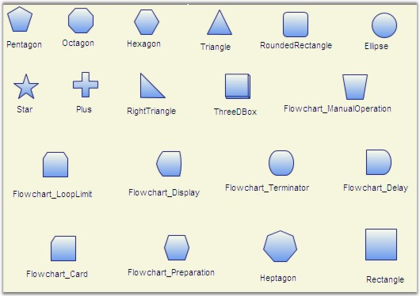
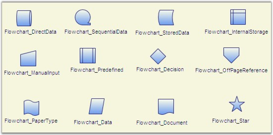

A node can be assigned with a shape using the Shape property. Several built-in shapes are provided. The user can select from any one of the built-in shapes or specify their own custom shapes using the CustomPathStyle property, which will be explained later in this user guide.
|
[C#]
Node n = new Node(); n.Shape = Shapes.FlowChart_Card; diagramModel.Nodes.Add(n); |
|
[VB]
Dim n As New Node() n.Shape = Shapes.FlowChart_Card diagramModel.Nodes.Add(n) |
The following is a list of built-in shapes:

Figure 27: Built-in Shapes

Figure 28: More Built-in Shapes